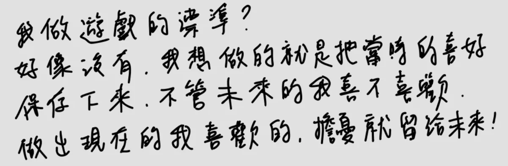

我做遊戲的標準？

打字版 · English
我做遊戲的標準？好像沒有。我想做的，就是把當時的喜好保存下來。不管未來的我喜不喜歡，做出現在的我喜歡的，擔憂就留給未來！
My standard for making games? I don't think I have one. I just want to save what I love right now. Whether or not future me likes it, I make what present me likes, and leave the worrying to the future.